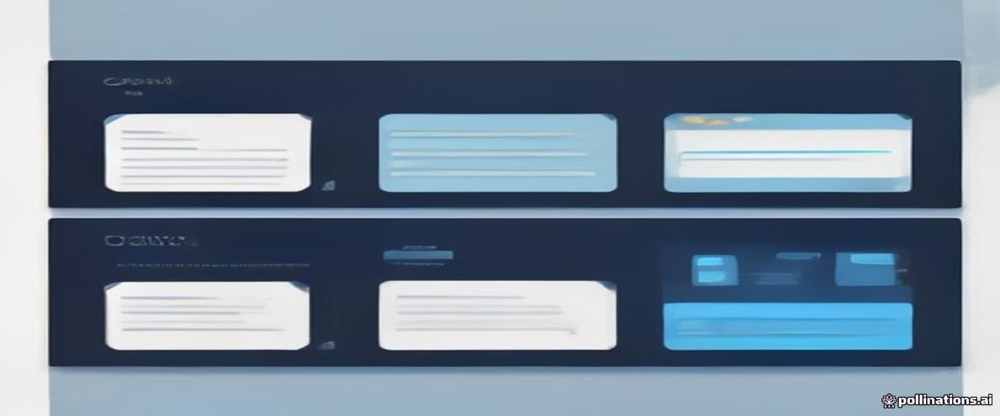

flowchart TB
subgraph TS["Node / TypeScript"]
N1["package.json<br/>+ package-lock.json"] --> N2["npm install<br/>(node_modules)"]
N2 --> N3["tsx --watch src/index.ts"]
end
subgraph PY["Python"]
P1["pyproject.toml<br/>+ requirements.txt"] --> P2["python -m venv .venv<br/>pip install -r"]
P2 --> P3["uvicorn app.main:app --reload"]
end
subgraph GO["Go"]
G1["go.mod + go.sum"] --> G2["go mod download<br/>(module cache)"]
G2 --> G3["go run . / go build"]
end
11 2. Necesitamos que alguien escuche el puerto 8000
En backend, tú eres el navegador de alguien más

NotaEn una frase
Vas a aprender cómo se inicializa un proyecto backend para que cualquiera (tu laptop, CI, producción) lo corra igual: manifiesto de dependencias, entorno aislado y un comando para arrancar. Es el npm install que ya conoces — ahora del lado del servidor.
11.1 El problema
El servidor del capítulo anterior era un juguete: un archivo, una librería, un comando. Pero ahora imagina que otra persona clona tu repositorio. ¿Qué instala? ¿Qué versión del runtime? ¿Qué comando arranca el proyecto?
TipExplicación de: runtime
El runtime es el motor que ejecuta tu código: Node.js es el runtime de JavaScript fuera del navegador; CPython es el de Python; Go compila a binario y el runtime va empaquetado dentro. Es “quien corre” lo que escribiste.
TipExplicación de: repositorio
Un repositorio (repo) es la carpeta del proyecto con todo su historial Git adentro. GitHub/GitLab son servicios que hospedan repos para compartirlos y respaldarlos.
En frontend esto lo resolviste mil veces sin pensar: package.json, npm install, npm run dev. Backend tiene exactamente el mismo problema — con una diferencia: ahora hay tres formas de resolverlo, y cada ecosistema decidió distinto.
11.2 Cómo lo resuelve un equipo
Un equipo real exige tres cosas antes de escribir la primera línea de lógica:
- Reproducibilidad: cualquier máquina (tu laptop, CI, producción) instala exactamente las mismas dependencias.
- Aislamiento: las librerías del proyecto A no contaminan al proyecto B.
- Un solo comando para arrancar: si el README dice “paso 1, paso 2… paso 9”, ya perdiste.
TipExplicación de: producción
Producción (prod) es el entorno real: donde están los usuarios, los datos que importan y las consecuencias. Todo lo demás — local, staging — existe para que los errores ocurran antes de llegar ahí.
TipExplicación de: dependencia
Una dependencia es código de terceros que tu proyecto usa: npm install, pip install, go get las traen. Cada una es deuda — ahora funciona, pero hay que mantenerla, actualizarla y confiar en ella.
Ejemplo de lo que un equipo espera encontrar en el README:
git clone … && cd taskflow
pip install -r requirements.txt # o: npm install / go mod download
uvicorn app.main:app --reload # o: npm run dev / go run .
# → GET http://localhost:8000/health responde {"status":"ok"}Nuestro proyecto — Taskflow — nace aquí: la API de tareas que acompañará todo el libro. Empezamos por su esqueleto de entorno, no por sus endpoints.
TipExplicación de: entorno (environment)
Un entorno es una instancia completa donde corre tu app con su propia config y datos: local (tu máquina), staging (réplica de prueba), producción (la real). Cada entorno tiene sus propias llaves y su propia base de datos.
11.3 Conceptos nuevos
- U Runtime: el programa que ejecuta tu código (Node, el intérprete Python, el binario compilado de Go). En frontend era el navegador; aquí es un proceso del sistema operativo.
TipExplicación de: lenguaje compilado vs interpretado
Compilado (Go): el código se traduce a binario una vez y ese binario corre solo — rápido, deploy simple. Interpretado (Python, JS): un runtime lee el código en cada ejecución — flexible, pero necesita el runtime instalado.
TipExplicación de: proceso
Un proceso es un programa en ejecución: el sistema operativo le da memoria propia y un lugar en la fila del CPU. Tu API es un proceso; Postgres es otro; el navegador es varios. Que “se caiga el proceso” = el programa murió.
TipExplicación de: compilador / transpilador
Un compilador traduce código a otra forma: TypeScript → JavaScript (transpila), Go → binario (compila). Atrapa errores antes de ejecutar. tsc, esbuild, go build son compiladores.
- TS
package.json+ lockfile: manifiesto de dependencias + resolución exacta. - Py
venv+requirements.txt/pyproject.toml: el “node_modules por proyecto” de Python — pero como entorno, no carpeta. - Go
go.mod: dependencias versionadas por el propio toolchain; no hay “gestor” separado,goes el gestor. - U Watch mode: reiniciar el servidor al guardar —
tsx --watch,uvicorn --reload,air(o rebuild manual).
11.4 La explicación visual
Los tres responden a la misma pregunta — “¿de qué depende este proyecto y cómo lo instalo igual en cualquier lado?” — con mecánicas distintas.
11.5 Implementación
Inicializamos el proyecto Taskflow en los tres stacks. Fíjate en qué archivo es el “contrato de dependencias” de cada uno:
mkdir taskflow && cd taskflow
npm init -y
npm install express
npm install -D typescript tsx @types/express
npx tsc --initpackage.json queda como manifiesto; package-lock.json fija las versiones exactas que se instalaron (ese archivo sí se commitea).
taskflow/
├── package.json
├── package-lock.json
├── tsconfig.json
└── src/
└── index.tsnpx tsx watch src/index.ts # arranca y reinicia al guardarmkdir taskflow && cd taskflow
python -m venv .venv # el entorno aislado — tu "node_modules" conceptual
source .venv/bin/activate # en Windows: .venv\Scripts\activate
pip install fastapi uvicorn
pip freeze > requirements.txt # el lockfile honesto: versiones exactastaskflow/
├── .venv/ # NO se commitea (va en .gitignore)
├── requirements.txt
└── app/
├── __init__.py
└── main.pyuvicorn app.main:app --reload --port 8000app.main:app significa: “dentro del paquete app, módulo main, objeto app”. Uvicorn importa tu código y le sirve HTTP — recuerda del Cap. 1: uvicorn es el servidor, FastAPI es la aplicación.
mkdir taskflow && cd taskflow
go mod init taskflow # crea go.mod — ya tienes gestor de dependenciastaskflow/
├── go.mod
└── main.gogo run . # compila y ejecuta
# o mejor, con rebuild automático:
go install github.com/air-verse/air@latest && airGo no tiene carpeta de dependencias local: los módulos van a un caché global (~/go/pkg/mod) y go.sum registra los hashes exactos — el lockfile criptográfico viene incluido.
TipPrompt listo para tu AI
Inicializa un proyecto backend nuevo llamado "taskflow" en
[Express+TypeScript / FastAPI+Python / Go]. Requisitos: manifiesto de
dependencias (package.json / requirements.txt / go.mod), entorno aislado
(si aplica: venv), .gitignore correcto para el stack, estructura de
carpetas mínima, y un README con los 3 comandos: instalar, arrancar en
watch mode, y probar GET /health con curl. Dame los comandos de terminal
exactos paso a paso.11.6 ¿Por qué cada stack lo hace así?
Lo único que necesitas llevarte: npm y pip instalan dependencias en el proyecto; Go las funde en un solo binario. Por eso el deploy de Go es copiar un archivo. El detalle:
NotaDetalle: tres filosofías de dependencias
| npm (TS) | pip+venv (Py) | go mod (Go) | |
|---|---|---|---|
| Dependencias viven en | node_modules/ del proyecto |
.venv/ del proyecto |
caché global con hashes |
| Manifiesto | package.json |
requirements.txt/pyproject.toml |
go.mod |
| Lockfile | package-lock.json |
pip freeze (manual) |
go.sum (automático) |
| Aislamiento | por carpeta | por entorno activado | por hashes en caché |
La diferencia conceptual que importa: npm y pip instalan dependencias “locales” (el proyecto carga lo que está en su carpeta/entorno), mientras Go compila un único binario — las dependencias terminan fundidas en el ejecutable y desaparecen como concepto en producción. Por eso el deployment de Go (Cap. 30) será ridículamente simple: copias un archivo y listo.
Y una nota honesta: si en Express escribir package.json te pareció natural, el venv de Python te parecerá un paso extra torpe (hay que activarlo) — es el precio de que Python no tuviera node_modules por diseño durante años. Hoy existen herramientas modernas (uv, poetry) que lo hacen más cómodo; el libro usa venv+pip porque es lo que entenderás en cualquier equipo.
TipOtras cimentaciones: ¿siempre estos gestores de paquetes?
Esta decisión es material: declarar y fijar dependencias es estructural — pero el gestor concreto es intercambiable dentro de cada ecosistema.
| Ecosistema | El del libro | Alternativas | Qué te cuesta / qué ganas |
|---|---|---|---|
| Node | npm |
pnpm (más rápido, disco duro feliz), yarn, bun (runtime+gestor) | pnpm cambia node_modules a links — casi gratis y mejor; bun es joven pero rapidísimo |
| Python | venv+pip |
uv (Rust, 10-100× más rápido), poetry/pdm (resolución+lockfile integrados), conda | uv es drop-in hoy; poetry/pdm gestionan el proyecto entero pero imponen su flujo |
| Go | go mod |
— (el toolchain es el gestor) | No hay elección real — ventaja Go: una herramienta, una forma |
La lección: cuando leas “instala con X”, tradúcelo a “declara dependencia en el manifiesto del ecosistema”. La sintaxis cambia; la obligación (manifiesto + lockfile + aislamiento) no.
11.7 Errores comunes
- Instalar librerías globalmente (
pip installsin venv): funciona hoy, rompe mañana cuando otro proyecto necesita otra versión. En Python, elvenvno es opcional — es la norma. - Commitear
node_modules/o.venv/: son artefactos locales; lo que se versiona es el manifiesto (package.json,requirements.txt,go.mod). - No fijar versiones: “funciona con la última versión” es una bomba de tiempo. Lockfile siempre.
- Olvidar activar el venv en una terminal nueva: el síntoma es
ModuleNotFoundErroraunque “lo instalaste ayer” — lo instalaste dentro del entorno, no en el Python global.
11.8 Buenas prácticas
- README con un comando de arranque desde el día 1 (
npm run dev,uvicorn … --reload,go run .). .gitignoredesde el primer commit:node_modules/,.venv/,.env,__pycache__/, binarios compilados.- Versiones explícitas en
requirements.txt/package.json— nada deinstalla ciegas en producción. - El proyecto arranca limpio en una máquina virgen como definición de “setup terminado”: clona → instala → corre.
NotaEXTRA · El panorama de lenguajes backend
EXTRA Curado de roadmaps externos (roadmap.sh, guías de bootcamp): los lenguajes que verás en el mercado, con su reputación honesta —
- Go — moderno y simple; rendimiento general excelente
- Python — elegante, ideal para apps backend sencillas
- JavaScript / Node.js — serial para aplicaciones web; desarrolladores de sobra
- Java — código más complejo, pero increíblemente rápido
- C# — excelente si trabajas en el ecosistema Microsoft
- Ruby — bueno si quieres Rails y te gusta ese estilo
- PHP — excelente para sitios web simples; menos para APIs
El libro elige TypeScript + Python + Go porque entre los tres cubren casi todos los modelos (event loop, async/GIL, goroutines). No hay elección “correcta” — hay el que tu equipo y tu mercado local usan. → cap-40 compara a fondo.
11.9 Ejercicio
- Inicializa Taskflow en tu lenguaje elegido con la estructura de arriba.
- Añade a
.gitignorelo que corresponda a tu stack. - Escribe en el README los tres comandos: instalar, arrancar, probar
/health.
11.10 Mini reto
Sin mirar documentación: explica qué información lleva un lockfile que el manifiesto no tiene, y por qué un equipo exige commitearlo. Pista: ¿qué pasa si Express publica mañana una versión con un bug y tu compañero instala después que tú?
NotaSoluciones
Ejercicio. La estructura queda como los árboles de la sección Implementación; el .gitignore mínimo por stack: node_modules/ (TS), .venv/ + __pycache__/ (Py), binario compilado (Go). Los tres comandos del README: instalar deps → arrancar en watch mode → curl localhost:8000/health.
Mini reto. El manifiesto dice “quiero Express ^4” — un rango; el lockfile registra la versión exacta resuelta (4.19.2) y la de cada dependencia transitiva, con hashes. Sin lockfile, tu compañero instala mañana la 4.19.3 con el bug y “en mi máquina funcionaba” — con lockfile, npm ci/pip install -r/go mod download instalan bit a bit lo mismo.
11.11 Vocabulario técnico del capítulo
TipExplicación de: objeto / dict / struct
Un objeto es una colección de datos con nombre: {name: "Ana", age: 30} — cada dato es una propiedad (clave → valor). Python los llama dict, Go los arma con struct, TS con objetos/interface.
TipExplicación de: clase / struct
Una clase es el molde de un objeto: define qué datos y qué métodos tiene. class Task es el molde; new Task() es una instancia concreta. Go no tiene clases — usa struct + métodos sueltos.
TipExplicación de: memoria (RAM)
La memoria RAM es el escritorio de trabajo del programa: rápida, pero se borra al apagar. Los datos que deben sobrevivir van a disco o a la base de datos. Por eso let tasks = [] pierde todo al reiniciar.
TipExplicación de: hash / bcrypt
Un hash es una función de un solo sentido: contraseña →$2b\(10\)…`. No se puede revertir — por eso las contraseñas se hashean, no se cifran. bcrypt es lento a propósito: fuerza bruta cara para el atacante.
TipExplicación de: deploy / despliegue
Un deploy es poner tu código a correr en el servidor: copiar la imagen, iniciar el proceso, verificar que responde. El objetivo es que sea aburrido — automático, repetible, con rollback.
TipExplicación de: caché / Redis
Un caché es una copia rápida de algo costoso de obtener: el resultado de una query pesada, la sesión. Redis es el caché estándar. La regla de oro: cachear es fácil, invalidar (saber cuándo el caché ya no vale) es lo difícil.
TipExplicación de: imagen (Docker)
Una imagen es la plantilla inmutable de la que nacen contenedores: la foto del disco + cómo arrancar. Se construye en capas (Dockerfile), se versiona con tags, se publica en un registry.
TipExplicación de: build
El build (construcción) es el proceso que convierte tu código fuente en algo ejecutable/entregable: compilar TypeScript a JS, empaquetar el frontend, armar la imagen Docker. Lo que se despliega es el resultado del build, no tu código crudo.
TipExplicación de: terminal / consola
La terminal (consola, línea de comandos) es la interfaz de texto con el sistema operativo: escribes comandos, lees resultados. Es como hablarle a la computadora por cartas en vez de señalar con el mouse.
TipExplicación de: commit
Un commit es una foto guardada del código con un mensaje que dice por qué cambió. La historia del proyecto es una cadena de commits: puedes volver a cualquiera, ver qué cambió y quién lo hizo.
TipExplicación de: puerto
Un puerto es una puerta numerada dentro de una computadora: la IP llega al edificio, el puerto al departamento. :3000 = “la app que escucha en el departamento 3000”. Postgres suele usar 5432, HTTP el 80, HTTPS el 443.
TipExplicación de: localhost / 127.0.0.1
localhost significa “esta misma máquina” — es la dirección que tu computadora usa para hablarse a sí misma. Cuando desarrollas, el “servidor” y el “cliente” viven en tu laptop: por eso todo es localhost:3000.